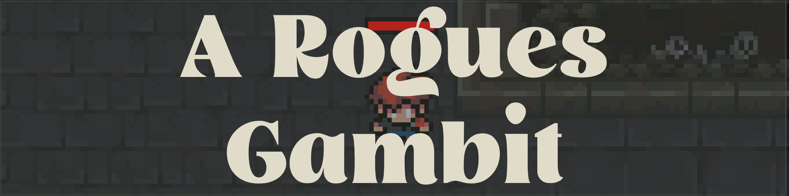
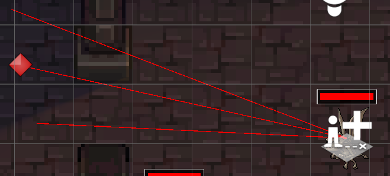
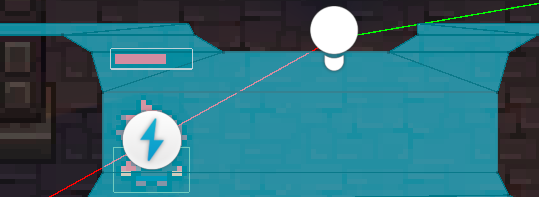

This was one of my first games made using a games engine, and my first using Unity
I wanted to focus on using Ray Tracing in a variety of ways throughout the level
I use Ray Tracing to detect if the player is in shadow allowing for dyanmic and
accurate shadows, as well as the enemies vision so you are only detected when in
line of sight, there is a variety of other techniques used:

Each enemy uses three raycasts to detect the player in a forward cone, as shown, then when the player crosses any of
those lines the enemy latches on to the player until either it or the player is killed, now running a full levels worth
of raycasts each update would be costly so to reduce the load each room has a box collider and when the player
enters / leaves a broadcast is sent out on the enemies in that room start / stop the raycast vision.
The enemies have two movement modes: patrolling and chasing. While patrolling the enemy moves between
two waypoints using the levels navmesh, and while the enemy is chasing the enemy uses the navmesh to
reach the player.

The core of the game runs on the idea that when the player is in shadow they are completely invisible to enemies
so I used raycasts but if every light checked against the player it would be very inefficient, so each light
checks to see if the player would be close enough to the light first, then if they are the light then sends a
raycast to check if there is a line of sight i.e. player not behind a pillar in shadow.